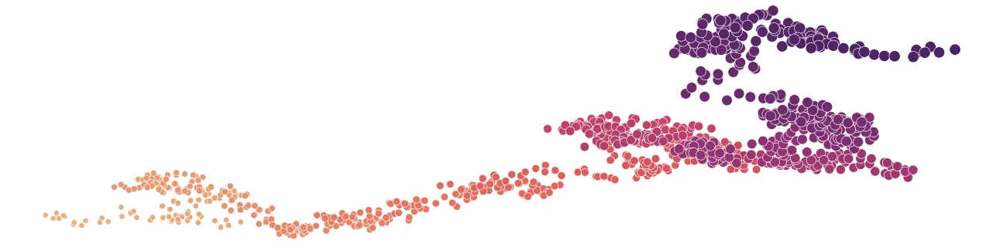
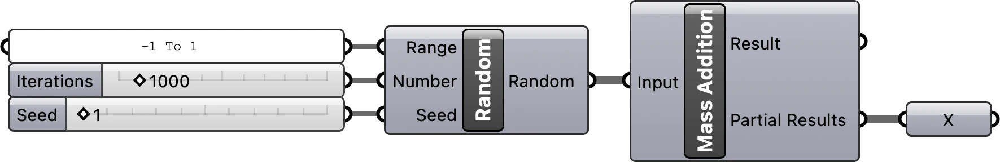
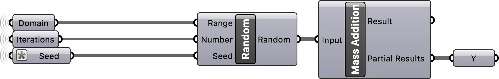
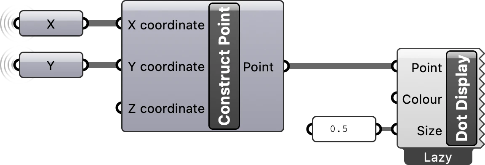
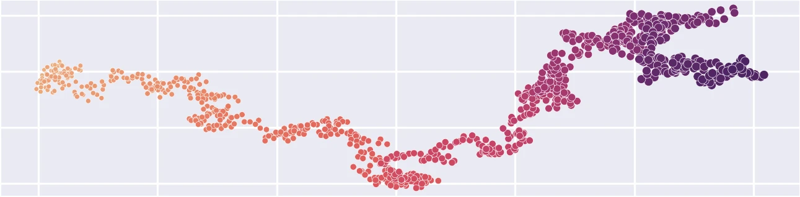

Random walk with Grasshopper
Model a 2D random walk using Grasshopper

Introduction
This tutorial is a guide to simulating random walks with Grasshopper - Rhino’s visual programming environment [1]. A random walk is an algorithm that simulates a walker taking steps in random directions. To easily simulate a 2-dimensional random walk, first generate sets of random vectors representing steps and then take the cumulative sum of these vectors to find the position of the walker at each step. For this 2-dimensional random walk, we will decompose movement into x- and y-vectors representing east-west and north-south movement. For each step our walker will choose to move a pace to either east or west and north or south. To make the walk smoother, we will incorporate an element of unpredictability by allowing our walker to take partial steps.
Define x-component of steps
First define the x-component of our walker’s movement. We will represent a full pace to the west as -1 and a full pace to the east as 1. Start by generating a list of random floating point numbers between -1 and 1. To do this, place a Random component on the canvas. Plug a Number Slider into the Seed input parameter to set the seed of the pseudorandom number generator. Plug a Number Slider into the Number input parameter to set the number of random values to be generated. Plug a text panel into the Range input parameter and set the text to -1 to 1. Then plug the output list of random numbers into a Mass Addition component. This will calculate the cumulative sum of the random numbers.

Define y-component of steps
Next define the y-component of our walker’s movement. Place a Random component on the canvas and use the same values for the input Range and Number, but use a different value for the input Seed. A simple way to do this is to reuse the same seed, but add 1 to it. Then use Mass Addition calculate the cumulative sum of the resulting list of random numbers.

Plot random walk
The Mass Addition component returns a result - the total cumulative sum - and a list of partial results - the cumulative sum at each step. These partial results represent the x- or y-components of our walker’s position in space at each step. To plot our walkers position in space, place a Construct Point on the canvas and plug the partial results of the cumulative sums along the x- and y-vectors into its input x- and y-coordinates. Finally visualize the resulting points using a Dot Display component.

